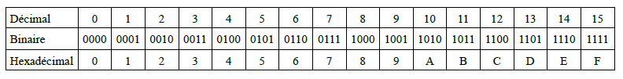

L'ESSENTIEL DE LA SEQUENCE 3⚓︎
Ce qu’il faut savoir⚓︎
-
en base 10 nous avons 10 symboles (chiffres) : 0, 1, 2, 3, 4, 5….9
-
en base 2 (binaire) nous avons 2 symboles (chiffres) : 0 et 1
-
en base 16 (hexadécimal) nous avons 16 symboles : 0, 1, 2….8, 9, A, B, C, D, E, F
-
il serait judicieux de connaître par coeur (ou au moins être capable de les retrouver rapidement) les nombres jusqu’à 15 :

-
on peut coder \(2^n\) valeurs avec \(n\) bits
-
connaître le principe du complément à 2 (voir cours)
-
savoir que pour une représentation sur \(n\) bits, il sera possible de coder des valeurs comprises entre \(-2^{n-1}\) et \(+2^{n-1}- 1\).
-
la représentation en machine des nombres réels (on parle souvent en informatique de nombres flottants ou nombre à virgule flottante) diffère de la représentation en machine des entiers
-
la norme IEEE 754 est la norme la plus employée pour la représentation des nombres à virgule flottante dans le domaine informatique.
-
il existe 2 formats associés à la norme IEEE 754 : le format simple précision (le nombre est représenté sur 32 bits) et le format double précision (le nombre est représenté sur 64 bits)
-
que cela soit en simple précision ou en double précision, la norme IEEE754 utilise :
-
1 bit de signe (1 si le nombre est négatif et 0 si le nombre est positif)
-
des bits consacrés à l'exposant (8 bits pour la simple précision et 11 bits pour la double précision)
-
des bits consacrés à la mantisse (23 bits pour la simple précision et 52 bits pour la double précision)
-
-
à cause de la taille fixe de la mantisse on peut, dans certains cas, avoir des erreurs d’arrondies, par exemple 0.1 + 0.2 n’est pas égal à 0.3. On évitera de tester l’égalité entre 2 flottants (par exemple
0.1 + 0.2 == 0.3renvoieFalseen python!)
Ce qu’il faut savoir faire⚓︎
- convertir décimal vers binaire
- convertir binaire vers décimal
- convertir décimal vers hexadécimal
- convertir hexadécimal vers décimal
- convertir binaire vers hexadécimal
-
convertir hexadécimal vers binaire
-
Vous devez savoir représenter un entier (positif ou négatif) en utilisant le complément à 2 sur \(n\) bits (représentation binaire \(\longrightarrow\) représentation décimale et représentation décimale \(\longrightarrow\) représentation binaire).
-
vous devez être capable de trouver la représentation en binaire d’un nombre réel (par exemple 0.1, 0.25 ou encore 1/3)
- vous n’avez pas à savoir écrire un nombre flottant en utilisant la norme IEEE754, vous devez juste connaitre les grands principes de cette norme (bit de signe, exposant, mantisse)
1 | |